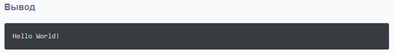

Язык программирования C++ был создан в 1983 году Бьёрном Страуструпом как усовершенствование языка C. Основной целью разработки C++ было предоставление инструментов для объектно-ориентированного программирования, сохраняя при этом эффективность и гибкость языка C.
C++ быстро стал одним из самых популярных языков программирования благодаря своей универсальности, применяемости в системном программировании, разработке игр, графики и других областях.
Дополнительную информацию можно найти в статье на Википедии.
C++ является компилируемым, статически типизированным языком программирования, поддерживающим множество парадигм: объектно-ориентированное, процедурное и обобщённое программирование. Он позволяет:
Основные особенности языка включают наследование, полиморфизм, шаблоны и управление памятью вручную.
| Версия | Год выпуска | Основные особенности |
|---|---|---|
| C++98 | 1998 | Первая стандартизация |
| C++11 | 2011 | Лямбда-выражения, улучшенные шаблоны |
| C++20 | 2020 | Модули, концепты |
#include <iostream>
using namespace std;
int main() {
cout << "Привет, мир!" << endl;
return 0;
}
Этот пример демонстрирует простую программу на C++, которая выводит текст "Привет, мир!" на экран.
.cpp.